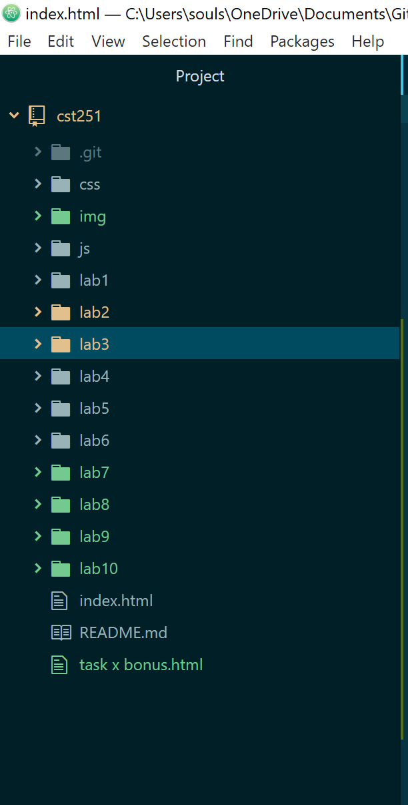
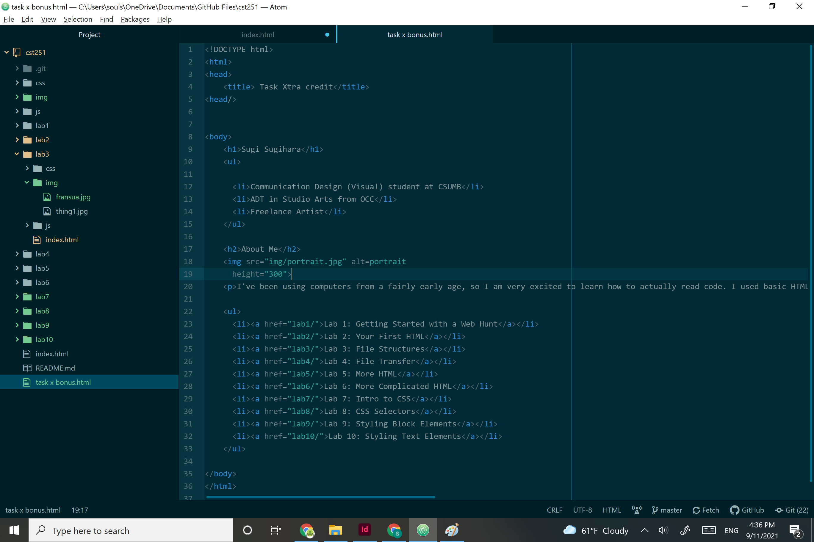
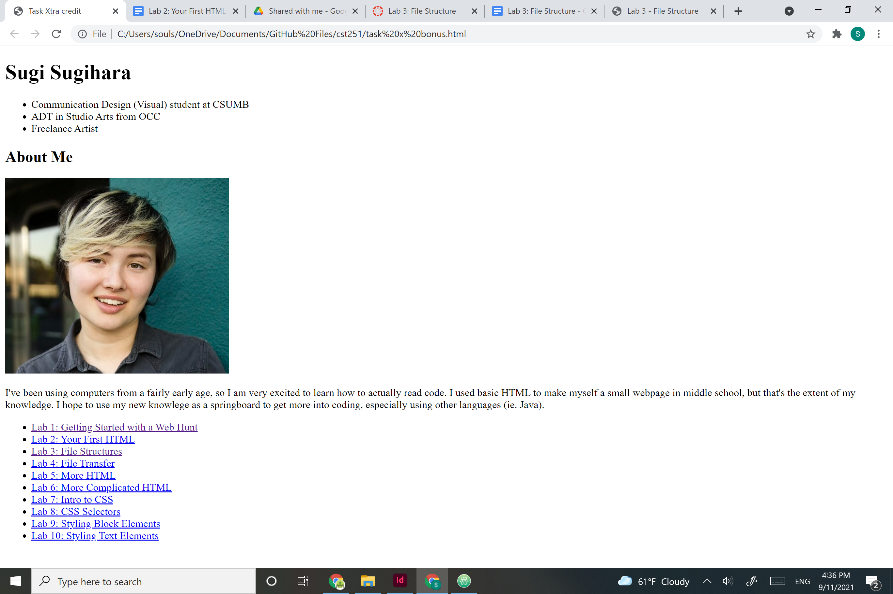
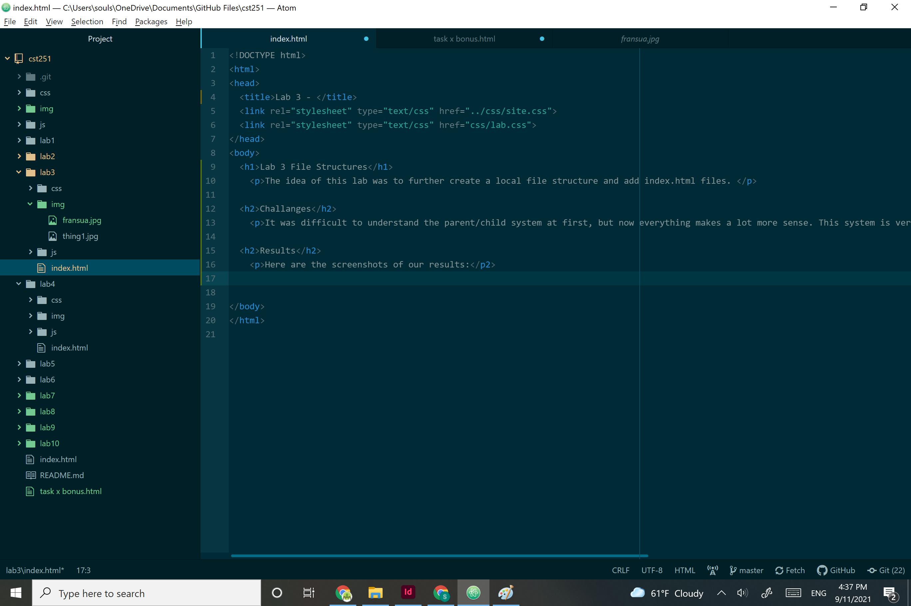
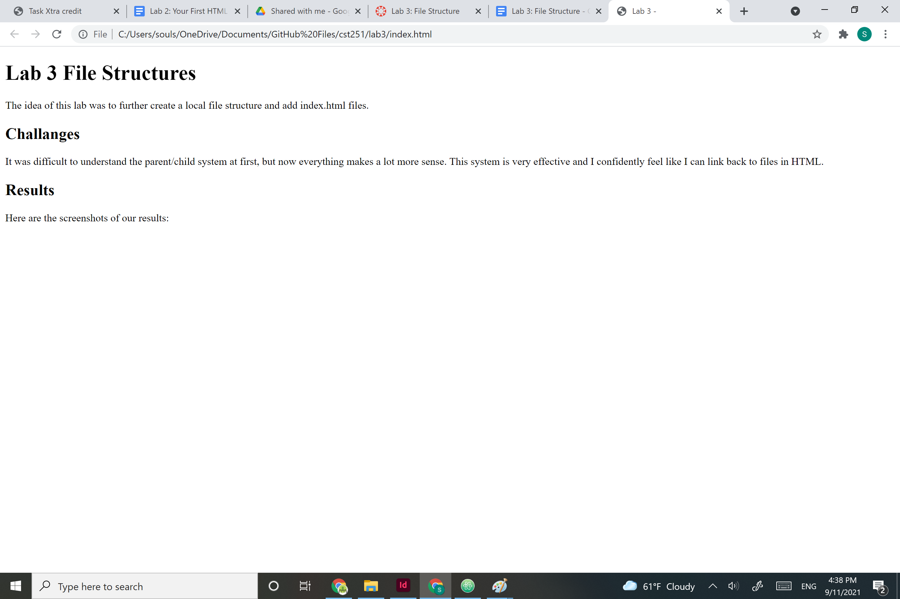

The idea of this lab was to further create a local file structure and add index.html files.
It was difficult to understand the parent/child system at first, but now everything makes a lot more sense. This system is very effective and I confidently feel like I can link back to files in HTML.
Here are the screenshots of our results:
My new file structure
The index.html homepage file as seen in Atom. Created in my cst 251 folder.
The index.html homepage file as see in desktop.
The index.html Lab 3 file as seen in Atom. Created in my lab 3 folder.
The index.html Lab 3 file as seen in desktop.
